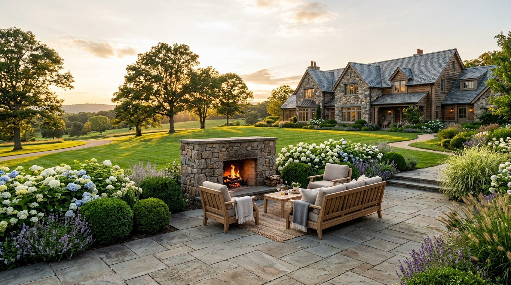

Meadowood Terraced Estate
Tiered Bluestone, Boxwood Borders • Bedford, NY

Highland Ridge Pavilion
Integrated Outdoor Kitchen & Timber Arbor • Armonk, NY

Quarry Hill Courtyard
Granite Flagstone & Native Fern Margin • Greenwich, CT

Winding Brook Hearth
Sunken Fire Lounge & Bluestone Patio • Chappaqua, NY
Willow Creek Perennial Walk
Four-Season Pollinator Palette • Pound Ridge, NY

Conyers Formal Grounds
Architectural Topiary & Manicured Lawns • Greenwich, CT

Sylvan Glade Illumination
Solid Brass 2700K Nightscape • Katonah, NY

Chestnut Hill Pool Environment
Zero-Edge Bluestone Coping & Spa • North Salem, NY

Cross River Residence
Complete Master Plan & Grading Overhaul • Cross River, NY
Click on any project to view high-resolution photography and materials used.